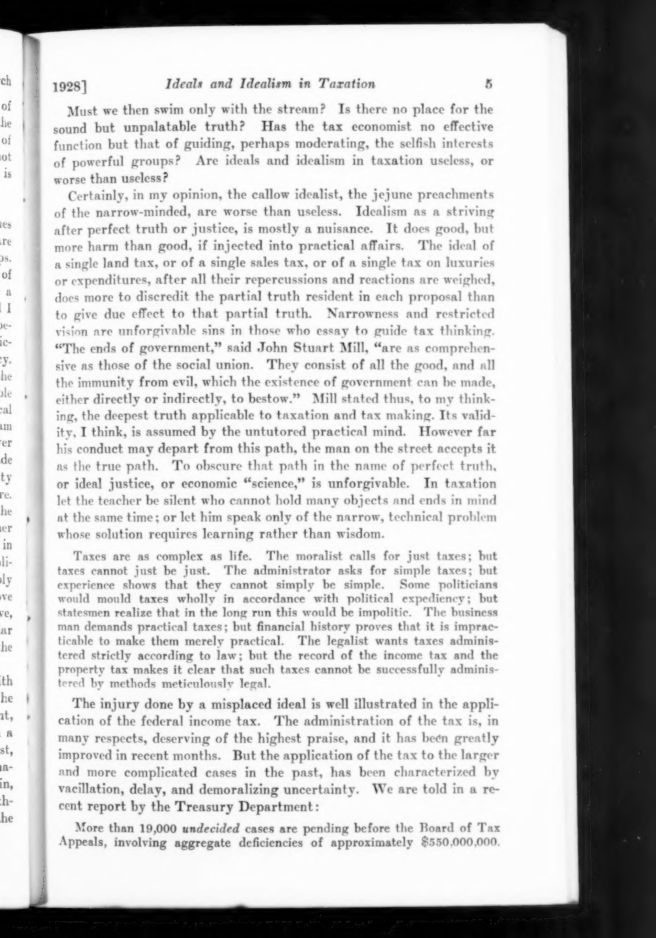

Williamson, 1928: como a Nova Inglaterra tributava a poupança
Leitura: 9 min
Williamson refaz, estado por estado, a história dos impostos estaduais sobre depósitos de poupança na Nova Inglaterra e pergunta se a poupança dos pequenos depositantes deveria ser tributada.


Em 1852, Connecticut passou a cobrar dos bancos de poupança, no lugar dos impostos locais, um imposto anual sobre os depósitos existentes numa data fixa. Foi o primeiro de uma série de impostos que Kossuth M. Williamson, da Wesleyan University, chama de quase um dispositivo da Nova Inglaterra: encargos uniformes em todo o estado sobre os depósitos de instituições de poupança, cobrados das próprias instituições e administrados pelo estado.
Esses impostos substituíram os impostos locais sobre o dinheiro, cobrados dos depositantes pelas alíquotas do imposto geral sobre a propriedade de cada município, e que, como todo estudioso do tema sabia, quase não alcançavam bens intangíveis. O autor registra o paradoxo:
“É um fato interessante que a Nova Inglaterra, onde a parcimônia é uma virtude e a acumulação um objetivo estimado, tenha sido a região que fez um esforço sério para pôr sobre a poupança uma carga tributária que não pudesse ser evitada.” (It is an interesting fact that New England, where thrift is a virtue and accumulation a cherished goal, should have been the section which has made an earnest effort to put a tax burden on savings which could not be evaded.)
Como o imposto evoluiu em Connecticut?
A alíquota de Connecticut mudou várias vezes depois de 1852. Em 1859 o imposto passou a ser pago semestralmente. As associações de construção e empréstimo foram tributadas de 1857 a 1875 e, desde então, segundo o autor, suas cotas ficaram totalmente isentas. Os departamentos de poupança das trust companies entraram em 1907, e os dos bancos nacionais em 1915.
A carga efetiva dependia das deduções. No começo os bancos podiam abater seus imóveis, já tributados pelos municípios; depois vieram títulos estaduais e municipais, ações de empresas cujos acionistas não eram tributados e, em 1902, uma mudança que o autor considera muito favorável aos bancos: em vez de deduzir o valor do imóvel dos depósitos, passaram a deduzir do imposto devido o imposto pago sobre o imóvel. Em 1921 o comissário obteve lei para impedir que bancos nacionais abatessem todos os seus títulos federais isentos dos depósitos de poupança.
O que fizeram os outros estados?
Rhode Island veio em 1860, com 15 centavos por 100 dólares de depósitos e reservas, sem abolir de início o imposto local; a alíquota subiu a 25 centavos em 1872 e a 40 centavos em 1893, e o imposto local sobre essas contas só foi revogado em 1912. A única dedução permitida eram títulos federais isentos. As associações domésticas de construção e empréstimo continuavam sujeitas apenas ao imposto local, ineficaz, o que o autor descreve como discriminação condenada desde 1912 e não corrigida.
Massachusetts adotou o imposto em 1862, pago semestralmente sobre os depósitos médios. As deduções vieram aos poucos, de ações e hipotecas a títulos estaduais e federais, e eram, em geral, as mesmas permitidas aos indivíduos. Os departamentos de poupança dos bancos nacionais pagavam, em vez disso, imposto de renda de 6% sobre os juros, o que gerava disputa sobre quem era mais tributado; as associações de construção, ali chamadas bancos cooperativos, ficaram isentas desde 1890.
New Hampshire começou em 1864 e distribuía a receita às cidades dos depositantes. A alíquota de 1% vigorou por vinte e cinco anos, e os comissários bancários pediam sua redução: diziam que ela empurrava os bancos para títulos e hipotecas arriscados do Oeste, encarecia o crédito ao agricultor local e pesava sobre pessoas de poucos recursos. Em 1895 a alíquota caiu e hipotecas locais foram isentadas; uma lei de 1925 previa nova redução gradual até 1931.
Maine adotou o imposto em 1872, com a receita destinada às escolas e, depois, dividida meio a meio entre escolas e estado. A comissão tributária de 1890 propôs alíquota maior sobre depósitos aplicados fora do estado, atendendo a queixas de agricultores de que o dinheiro saía do Maine. A lei de 1893 seguiu em parte essa linha, com deduções fracionárias para aplicações locais, e o autor conclui que a intenção era favorecer o investimento no estado.
Como tributar os bancos nacionais?
A lei bancária nacional só permitia tributar os bancos nacionais sobre seus imóveis e os acionistas sobre suas ações. Vermont, que adotou o imposto estadual em 1878, encontrou em 1906 uma saída. Cada depositante de banco nacional declara duas vezes por ano ao comissário de impostos o valor de seus depósitos; o imposto recai sobre ele, mas o banco pode optar por pagá-lo em seu lugar. A concorrência dos outros bancos e a influência do fisco bastaram para que os bancos fizessem a opção.
A Suprema Corte dos Estados Unidos confirmou a lei num caso de Vermont, entendendo que a assunção voluntária do imposto pelos bancos não violava a lei federal. Depois disso, diz o autor, os outros estados da região adotaram quase o mesmo plano, e onde ele existe todos os bancos nacionais se submeteram ao imposto.
Qual é o retrato de conjunto?
No resumo, o plano da Nova Inglaterra assume a forma de impostos de franquia de alíquota baixa, cobrados pelo estado sobre os depósitos por meio das próprias instituições, com isenção de outros encargos estaduais ou locais. Há exceções: alguns estados tributam também reservas e acumulações; associações de construção e empréstimo e cooperativas de crédito escapam em vários estados; a poupança postal é isenta em todos.
As deduções servem, conforme o estado, para evitar dupla tributação, estimular o investimento local ou isentar o que seria isento nas mãos do próprio depositante. Mas o tratamento entre instituições de um mesmo estado é desigual: dos três estados que tributam associações e bancos de poupança, um só permite deduzir hipotecas aos bancos, outro só às associações, e o terceiro a ambos. Quanto aos depósitos feitos em outros estados, três estados evitavam a dupla tributação por reciprocidade e um quarto por outro método; dois continuavam a praticá-la.
A poupança deve ser tributada?
Williamson observa que a pergunta não fora tratada adequadamente pelos economistas; Richard T. Ely alertara contra impostos altos sobre depósitos de poupança, e A. Barton Hepburn, quando superintendente bancário de Nova York, defendera a isenção. Para o autor, os números não resolvem a questão, porque os depósitos cresceram depois de aumentos e de reduções de alíquota. Tudo depende dos motivos de quem poupa.
Sua opinião é que a taxa de juros não é a principal razão pela qual os pequenos depositantes poupam. Se for assim, o imposto pouco desestimula a acumulação, e a conveniência social não exige isenção total. Mas, pelo critério da justiça, o imposto recairia sobre os próprios poupadores, que não formam um grupo rico.
Daí a proposta: uma isenção moderada para todos os depositantes ou, se a administração for inviável, uma pequena redução das alíquotas, com salvaguardas contra ricos que usem as instituições para fugir do imposto. A alíquota de Connecticut talvez fosse baixa demais, e as de outros estados altas demais; antes de decidir, seria preciso comparar a carga dos depositantes com a de outros investidores.
E o excedente dos bancos mútuos?
Os bancos de poupança da Nova Inglaterra não têm ações: pertencem aos depositantes, que recebem só os juros votados pelos administradores. Onde as reservas não são tributadas, os ganhos distribuídos e deixados no banco pagam imposto como depósitos, e os ganhos retidos ficam isentos. Em vez de tributar o excedente, o autor propõe obrigar a distribuição da parte que estiver acima de uma linha de segurança, como Massachusetts fazia havia décadas.
A última questão é a igualdade entre instituições. Os departamentos de poupança de bancos estaduais, trust companies e bancos nacionais já concorriam fortemente com os bancos mútuos. Como o imposto sobre depósitos recai sobre depositantes e o imposto sobre o capital recai sobre acionistas, não haveria razão para favorecer depositantes de bancos com ações; o Maine, por isso, deveria tributar os depósitos dos bancos nacionais pelo método de Vermont.
As associações de construção e empréstimo e as cooperativas de crédito estimulam a poupança e emprestam, como os bancos, e o autor não vê razão de serviço social para favorecer uma sobre outra. Devem ser tributadas igualmente e ter as mesmas deduções, mesmo que a dedução de hipotecas apague quase todo o imposto das associações.
Na minha leitura
Na minha leitura, o artigo é um levantamento legislativo minucioso, montado a partir de leis estaduais, relatórios de comissões e cartas de comissários de impostos. O valor está menos na tese do que no mapa: mostra como um imposto aparentemente simples se tornou, com décadas de deduções e exceções, um conjunto de regimes diferentes para instituições que faziam o mesmo serviço.
A parte normativa pertence ao debate sobre a incidência de impostos sobre a poupança e sobre a sensibilidade da poupança aos juros. O autor resolve a questão por uma hipótese explícita, a de que os pequenos poupadores não respondem muito à taxa de juros, e dela tira as duas conclusões: o imposto pouco reduz a poupança, mas pesa sobre quem tem menos.
Glossário
- Imposto geral sobre a propriedade
- imposto municipal americano sobre todos os bens de cada contribuinte, imóveis e móveis, inclusive dinheiro e créditos.
- Trust company
- instituição financeira estadual que acumulava funções de banco comercial, de poupança e de administração fiduciária.
- Associação de construção e empréstimo
- sociedade mútua que recebe poupança dos associados e financia a compra ou construção de casas.
- Cooperativa de crédito (credit union)
- associação de poupança e empréstimo entre membros de um grupo, como empregados de uma empresa.
- Imposto de franquia
- imposto cobrado de uma empresa pelo direito de operar, medido por uma base como capital ou depósitos.
Fontes
- State Taxes on Savings Deposits in New England — Kossuth M. Williamson (Wesleyan University) (pp. 45–64). Internet Archive (número completo, PDF)
- Edição completa, com os demais artigos: Nº 206 do Arquivo.
Documento em domínio público (EUA, publicado antes de 1931), via JSTOR Early Journal Content e Internet Archive. Resumo e comentário do autor deste site, sem afiliação com a American Economic Association. Encontrou um erro? Escreva: a correção é publicada no próprio texto, com data.
← Berman, 1928: a Suprema Corte e a arbitragem compulsória no Kansas ↑ Nº 206 · Adams e os ideais na tributação, Berman e as greves no Kansas Warburton, 1928: o desacordo sobre os nomes da distribuição →